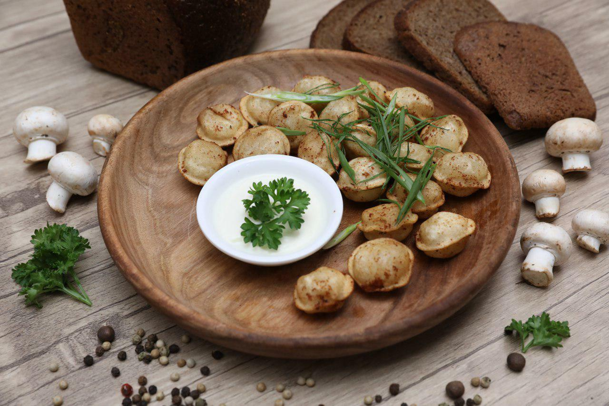

Kurka go'shtili qovurilgan chuchvaralar
|
|  |
- Аvvaliga chuchvaralarni qaynatish kerak boʼladi. Idishga suv solib, olovga qoʼying va qaynatib
oling. 1 oʼram chuchvarani soling va tuz qoʼshing. 2-3 daqiqa davomida pishiring, ammo oʼta
pishib ketmasin.
- Keyin idishning tag qismidan 5 mm.dan oshirmagan holda oʼsimlik moyini quying. Ustida ozgina
tutun paydo boʼlgunicha qizdiring. Chuchvaralardagi ortiqcha namlikni qogʼoz sochiqqa shimdirib
olganingizdan soʼng, tovaga ehtiyotkorlik bilan soling.
- Taxminan 10 daqiqa davomida qovurish kerak, hamma tomoni bir xilda qizarishi uchun chuchvaralar
doimiy ravishda aralashtirib, agʼdarib turiladi. Barcha chuchvaralar bir hil oltin-qizgʼish
tusga kirgach, tayyorligini tekshirib koʼrishingiz mumkin.
|